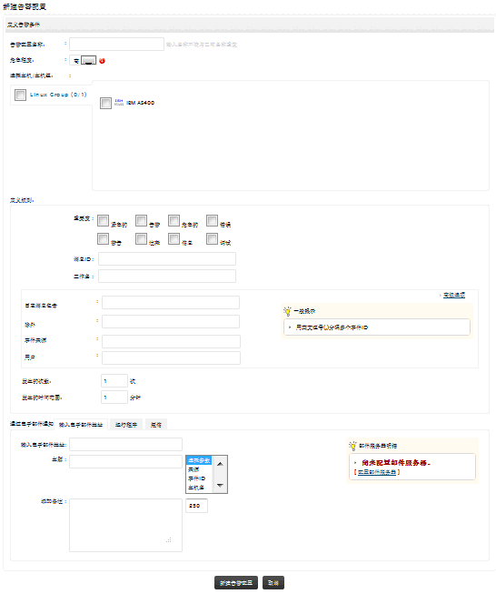

怎样创建IBM iSeries (AS/400)告警配置文件
首先，请确保在您的EventLog Analyzer中已至少添加了一台IBM iSeries (AS/400)主机。要创建IBM iSeries (AS/400)告警配置文件，可通过以下菜单实现：
- 告警页签 > 告警配置文件： +
- 设置页签 > 告警：AS/400
- 标签： +添加 > AS/400告警
请参照下面的步骤来创建IBM iSeries告警配置文件。

-
输入告警配置文件的名称。
-
指定此报表配置文件生成的告警的严重性级别，可选项包括高、中和低。
-
选择要生成告警的IBM iSeries主机和主机组。
-
定义告警的条件，从列表选择日志的严重性。告警将会在出现所选的严重性能级别的消息时生成，输入指定的iSeries消息ID，输入指定的iSeries
Job 名称。
-
使用日志消息包含字段定义在日志消息中出现指定的词组或短语时，触发告警，使用除外字段定义当日志消息中存在指定的词组或短语时，不触发告警。
-
对于以上两种字段，在高级设置下，您可以配置对于多个字段的匹配选项设置。
-
您可以控制告警的生成，将出现一次事件生成一次告警配置为，在特定时间段内出现N次事件生成一次告警。您需要设置事件出现的次数，以及事件出现的时间限制。
-
生成的告警可以通过邮件、短信进行通知，也可以通过运行程序，在生成告警时执行一个脚本或程序。设置告警通知选项。
-
点击添加告警配置文件按钮完成告警配置文件的创建，所有创建的告警配置文件将会列在告警配置文件明细页面，在那里您可以启用、禁用、修改和删除配置文件。
|